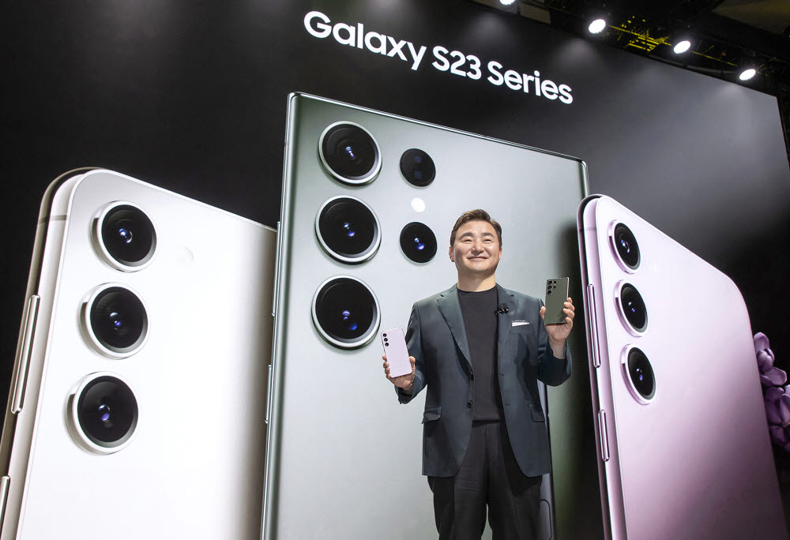

About
Samsung Galaxy S 시리즈란?

삼성 갤럭시 S 시리즈는 2010년부터 시작된 삼성의 대표 플래그십 라인업입니다.
매년 최고의 기술을 탑재하며 전 세계 스마트폰 시장을 이끌어 왔습니다.
갤럭시 S 시리즈 연도별 역사
- 2010 Galaxy S — 삼성 최초의 갤럭시 S. 안드로이드 스마트폰 시대의 시작.
- 2012 Galaxy S3 — 전 세계적으로 폭발적인 인기. 삼성을 글로벌 1위로 올려놓은 모델.
- 2014 Galaxy S5 — 최초로 지문인식과 방수 기능 탑재.
- 2016 Galaxy S7 — 방수 성능 강화, 마이크로SD 슬롯 부활.
- 2018 Galaxy S9 — 가변 조리개 카메라 최초 탑재. 슈퍼 슬로우모션 960fps 지원.
- 2020 Galaxy S20 — 최초 100배 줌 카메라 탑재. 5G 본격 지원 시작.
- 2021 Galaxy S21 — 디자인 전면 개편. 컨투어 컷 디자인 최초 도입.
- 2022 Galaxy S22 — 야간 촬영 성능 대폭 강화. 전문가급 카메라 기능 탑재.
- 2023 Galaxy S23 — Snapdragon 8 Gen 2 독점 탑재. 역대 최고 발열 관리.
S23 출시 배경
갤럭시 S23은 "일상 속 최고의 경험"을 컨셉으로 개발되었습니다. 전작 S22에서 지적된 발열 문제를 완전히 해결하고, 컴팩트한 크기를 유지하면서도 최고 사양을 담아내는 것이 목표였습니다. 삼성은 퀄컴과 독점 계약을 맺어 Snapdragon 8 Gen 2 for Galaxy 라는 특별 버전의 프로세서를 S23 시리즈에만 탑재했습니다.
S시리즈가 처음 도입한 기술들
- 최초 100배 Space Zoom — Galaxy S20 Ultra (2020)
- 최초 200MP 카메라 — Galaxy S22 Ultra (2022)
- 최초 가변 조리개 — Galaxy S9 (2018)
- 최초 지문인식 + 방수 — Galaxy S5 (2014)
- 최초 S펜 내장 S시리즈 — Galaxy S22 Ultra (2022)
S23 주요 평가
- DXOMARK 카메라 점수 — S23 Ultra 세계 최고 점수 기록 (2023년 기준)
- 발열 관리 — 전작 대비 온도 3~4도 감소, 역대 갤럭시 S 시리즈 중 가장 안정적
- 배터리 효율 — Snapdragon 8 Gen 2 탑재로 전작 대비 20% 이상 효율 향상
- 글로벌 출시 첫 달 판매량 — 역대 S시리즈 중 가장 빠른 초기 판매 기록